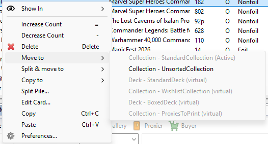
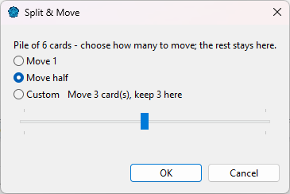

Select cards in a deck, a collection or My Cards, then right-click:
You can also drag cards onto a deck or collection tab, or onto one in the Card Navigator: dragging moves them, and holding Ctrl while dropping copies them.

A destination is greyed when the move or copy isn't allowed, with the reason next to it (the list is read-only, it is the current list, or the ownership rules below don't allow it).
A card's ownership follows its list (see Own and virtual cards):
| to a Standard / For Trade collection | to a deck or a Wishlist/To Print collection | |
|---|---|---|
| Move an owned card | Allowed | Not allowed — copy it instead |
| Move a virtual card | Allowed — the card becomes Own, after a confirmation | Allowed |
| Copy an owned card | Not allowed — it would be counted twice; move it instead | Allowed — the copy is virtual |
| Copy a virtual card | Allowed — the copy is Own, after a confirmation | Allowed |
In the table, "deck" means a virtual deck. An owned deck only receives owned cards that you move in from a Standard or For Trade collection or another owned deck. Copying, pasting, adding from the Scryfall Database, importing and raising a Count are refused, and so is moving a virtual card in, because they would create cards you don't own. Lowering a Count and deleting cards are refused too: cards only leave an owned deck by being moved out. Its entry is greyed in the Copy to and Add to menus, and in the Move to menu when virtual cards are selected.
Moving (or copying) virtual cards into a Standard or For Trade collection means you now own them — you bought the card, or printed the proxy. ManaDesk asks first:
This is the normal way to turn a wished card into an owned one. See From wishlist to collection.
A row stands for a pile of identical copies (Count 4 = four copies).

Split & move follows the same rules as a move, including the confirmation.
In a list with the Location column, click a card's location to move it. The picker only lists the allowed destinations; check Include sideboards and extra lists to see those too.

The deck or collection you opened (activated) last is the active one; its name shows (Active). Right-click a list in the Card Navigator and choose Open (Activate) to make it active. Then, from any list:
| Shortcut | Action |
|---|---|
| Ctrl+D | Copy the selected cards to the active list. |
| Ctrl+T, then A | Move the selected cards to the active list. |
| Ctrl+T, then 1 to 4 | Move that many copies. |
| Ctrl+T, then / | Move, asking how many copies. |
See also: Decks and collections · From wishlist to collection